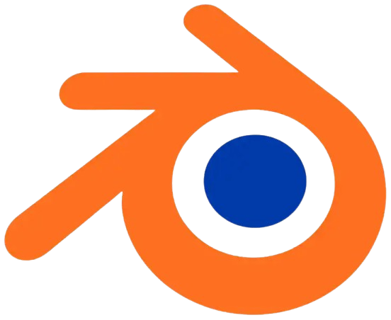
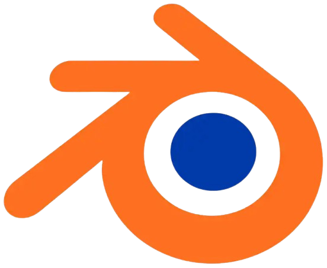

À propos !
Originaire de la Haute-Savoie, j’ai choisi de m’installer en Île-de-France afin d’enrichir mon parcours d’étudiante et saisir de nouvelles opportunités dans un environnement dynamique et stimulant, tout en découvrant la ville de Paris.
Étudiante à l’Université Gustave Eiffel à Champs-sur-Marne, je me spécialise dans le design graphique, l’audiovisuel et l’expérience utilisateur. À l’issue de mon cursus en BUT MMI (Métiers du Multimédia et de l’Internet), j’aspire à évoluer vers un post de directrice artistique ou vidéaste.
Mes compétences :
● Création graphique et audiovisuelle : Maîtrise et exploration continue de Premiere Pro, Photoshop, After Effects et autres outils de la suite Adobe ainsi que Blender (en début apprentissage).
● UX/UI design : Ergonomie, accessibilité web, démarche UX UI et maquettes sur Figma. Conception d’interfaces.
● Développement web : Langages de programmation HTML, CSS, JavaScript, PHP, SQL, avec conception de bases de données sur phpMyAdmin.
● Gestion de projet, développement personnel et connaissance de soi.
Portée par l’audiovisuel, le design graphique et la communication, j’aime donner à mes projets une image fidèle à ma vision, en alliant technique et créativité, me permettant ainsi de donner vie à des réalisations uniques et soignées.

Mon parcours
Année en cours de formation multimédia et développement web.
Baccalauréat général - spécialités mathématiques et physique chimie
Compétences
Savoir-être
Savoir-faire
Logiciels
Création numérique


 

Développement web


Formée à Opquast
En tant que future professionnelle du numérique, je suis également formée aux règles Opquast.
Elles permettent de faire appliquer les bonnes pratiques de la qualité web et couvrent des domaines essentiels comme l’accessibilité, l’ergonomie, la performance, la sécurité et le référencement. Grâce à Opquast, je conçois des sites web plus fiables, plus inclusifs et plus efficaces, en respectant des standards qui améliorent l’expérience utilisateur et la qualité globale des projets numériques, tout en incluant des pratiques écoresponsables.
Recommandations
L'équipe Chab'Livraison
Dans le cadre de mon stage chez Chab'Livraison
Dans le cadre de missions de communication et de marketing entre mi-juillet et mi-octobre 2025, Lucie a assuré la gestion des réseaux sociaux ainsi que la communication globale de l’entreprise.
Elle a fait preuve de rigueur, de sérieux et de fiabilité dans l’exécution des missions qui lui ont été confiées. Son travail a pleinement répondu à nos attentes et son expérience nous a apporté une aide précieuse.
Hayrunnisa
Etudiante en 2e année de BUT MMI
Lucie est une personne avec qui j’ai pu faire de nombreux projets universitaires.
C’est quelqu’un d’essentiel dans une équipe, autant pour sa discipline que pour sa créativité et son côté humain. Elle garde toujours sa touche personnelle, ce qui la rend unique dans son domaine.
Même dans les moments difficiles, elle sait rester calme et réagir pour le bien de tous.
J’aime vraiment travailler avec elle !
Madhvi
Etudiante en 2e année de BUT MMI
Lors de notre formation MMI, j’ai eu l’occasion de collaborer avec Lucie sur plusieurs projets. Lucie a toujours été quelqu’un sur qui nous pouvions compter.
Elle fournit un travail de très grande qualité et est une personne très sérieuse et agréable.
Durant tous les travaux que nous avons réalisés ensemble, elle s’est toujours montrée investie et organisée, elle est capable de s’adapter à tous les projets, ce qui a été un point fort pour leur réussite !
Mon CV
 20-01-26.png)